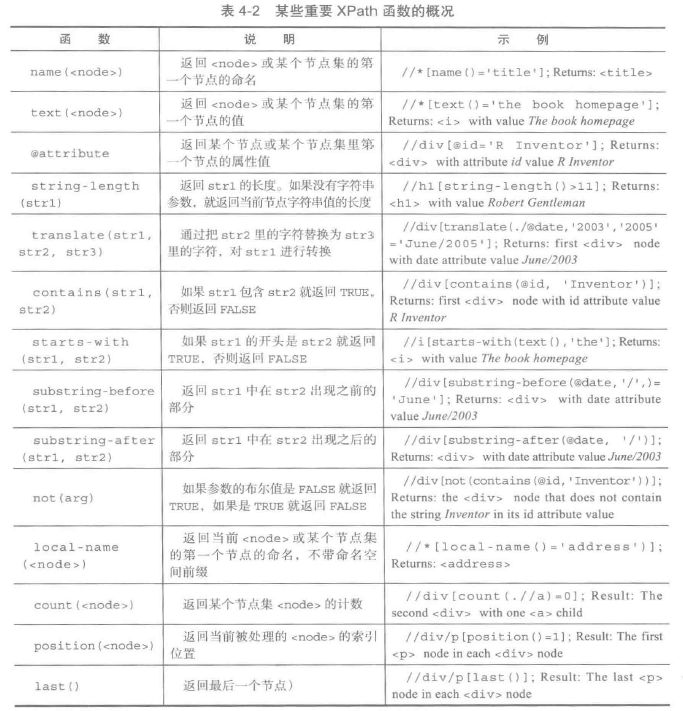

常见的网页分为静态页面和AJAX增强的动态网页
1.静态页面 rvest + xml2 组合
xml2::read_html(x,encoding =,)：读取静态页面为xml对象
rvest::html_nodes(x=,css=/xpath=)：提取xml对象中符合要求的所有节点
css选择器语法：html_nodes(pages,css = "body#ensembl-webpage div.account_holder")
其中body为待提取html标签名称,#ensembl-webpage中的#对应ID属性，.account_holder中的.对应class属性, 属性名称间的空格使用.代替（span class="_ht ht，css格式 span._ht.ht）
xpath选择器语法：可以直接通过浏览器复制（略）
双斜杠//表示相对路径，允许节点间的“跳转”，例如xpath="//p/i"
通配符(*)能匹配任何单个在对应位置上任意名字的节点，例如xpath="/html/body/div/*/i"
操作符.可以在选定的节点集里面选择当前节点(或者自身轴)，在使用谓语时也偶尔有用
操作符..可以选择当前节点向上一级的节点。例如xpath=//title/..
管道操作符|可以指定多个路径，这些路径会被逐个分析并一起返回，例如xpath= "//address | //title"(另一种方法在XML包中的xpathSApply包中是吧XPath查询保存在向量里queries <- c(address="//address",title="//title") , xpath=queries)

rvest::html_table():获取table标签中的表格
rvest::html_text():获取标签下包含的文本
rvest::html_attrs():获取指定节点中所有属性及对应属性值
rvest::html_children():获取指定节点下的子节点
以爬取esembl网站上snp信息为例：
packages <- c("xml2","rvest","magrittr")
lapply(packages, FUN = function(p) require(p,quietly = T,character.only = T))
# ---------- step1 ---------#
url <- "http://grch37.ensembl.org/Homo_sapiens/Variation/Explore?db=core;r=9:22125003-22126003;v=rs1333049;vdb=variation;vf=909181"
# 读取HTML网页到xml_document对象
pages <- read_html(url)
# 从xml_document对象中选择节点
#ensembl_panel_1 > div.content > div > div > div:nth-child(3) > div.rhs > p > span:nth-child(4)
## 通过css选择
nodes_css <- html_nodes(pages,css = "body#ensembl-webpage div.rhs") %>% html_nodes(css = "span") %>% '['(20) %>% html_text() %>% '[['(1)
nodes_xpath <- html_nodes(pages,xpath = "//*[@class=\"rhs\"]/p/span[4]") %>% html_text()2.AJAX动态页面 RSelenium + rvest
RSelenium详细介绍
中文参考
准备：
- 浏览器驱动(ChromeDriver)
- Selenium Server
步骤：
- 命令行输入java -jar /home/wqh/selenium/selenium-server-standalone-3.9.1.jar -port 4322开启selenuim服务
- 开启RStudio IDE输入：
#install.packages("RSelenium")
library(RSelenium)
library(rvest)
# 连接selenuim server
remDr <- remoteDriver(remoteServerAddr = "127.0.0.1",
port = 4322,
browserName = "chrome")
# 打开浏览器
remDr$open()
url <- "https://cancer.sanger.ac.uk/cosmic/fusion/overview?fid=2&gid=75087"
# 加载网页
remDr$navigate(url)
# 通过Xpath获取选项位置,模拟鼠标单击
remDr$findElement(using = "xpath", xpath)$clickElement()
# 获取需要提取的文本信息
web_cite <- remDr$findElement(using = "xpath", click_xpath)$getElementText()[[1]]
# 输入文本信息
to_search <- remDr$findElement(using = "xpath",input_xpath)
to_search$clearElement()
# 输入文本
search_enter <- list("输入内容",key='enter')
to_search$sendKeysToElement(search_enter)
# 获取标签属性值，例如“id”
to_ids <- remDr$findElement(using = "xpath",'//*[@id="searchfrm"]/div/table')
ids <- to_ids$getElementAttribute("outerHTML")[[1]] %>% read_html() %>% html_nodes("tr a") %>% html_attr("id") %>% unique()